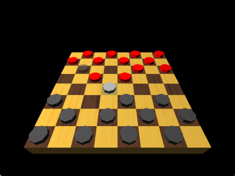

(Cross-Platform 3D) Checkers 0.1

As I said in my last post, I've started attempting PSP homebrew, and around December 2024 I started this project (a portable 3D checkers program using either OpenGL or the PSP APIs or potentially more consoles). Now you can interact with it and actually play, albeit without a computer opponent (local multiplayer only) and everything is very much bare-bones.
Supports PSP, and with OpenGL, Windows and POSIX/X11, with Carbon Mac support on a separate branch for now (supports classic Mac OS and OS X, not beyond Mojave; may consider porting to Cocoa instead). (I've also meant from the beginning to keep open possibly expanding to include chess or anything else as well, but thought checkers easier.)
More, hopefully, to come...